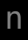

記号 n のモンスター / Monsters with symbol n
画面上で n と表示されるモンスター（9 種）。
Monsters displayed as n on screen (9).
← 記号から探す / Browse by symbol · モンスター索引 / Index
| ID | 記号 / Sym | 名前 / Name | 階層 / Lv | 希少度 / Rar | 速度 / Spd | 体力 / HP | AC | 経験値 / Exp |
|---|---|---|---|---|---|---|---|---|
| 71 |  |
ブラック・ナーガ Black naga |
3 | 1 | 110 | 6d8 | 40 | 22 |
| 94 | グリーン・ナーガ Green naga |
5 | 1 | 110 | 9d8 | 40 | 30 | |
| 130 | レッド・ナーガ Red naga |
7 | 2 | 110 | 11d8 | 40 | 40 | |
| 265 | ダーク・ナーガ Dark naga |
15 | 2 | 110 | 22d11 | 65 | 90 | |
| 269 | ガーディアン・ナーガ Guardian naga |
15 | 2 | 110 | 24d11 | 65 | 80 | |
| 919 | 水棲ナーガ Aquatic naga |
26 | 1 | 110 | 30d10 | 50 | 60 | |
| 436 | スピリット・ナーガ Spirit naga |
28 | 2 | 110 | 30d15 | 75 | 60 | |
| 642 | ブランドの情婦『ジャスラ』 Jasra, Brand's Mistress |
40 | 3 | 120 | 24d100 | 100 | 9000 | |
| 1169 | 怪物の太母『エキドナ』 Echidna, Great mother of monsters |
75 | 3 | 130 | 60d100 | 125 | 23500 |
🤖 このページは
lib/edit/MonraceDefinitions.jsoncから自動生成されています。手動で編集しないでください — 変更は次回の再生成で上書きされます。 This page is auto-generated fromlib/edit/MonraceDefinitions.jsonc. Do not edit by hand — changes are overwritten on regeneration. 生成 / Generated: 2026-07-04 13:37 UTC · hengband5ebae9734b·tools/generate-wiki.mjs